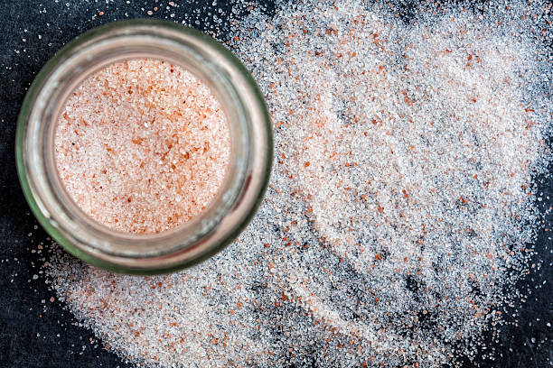
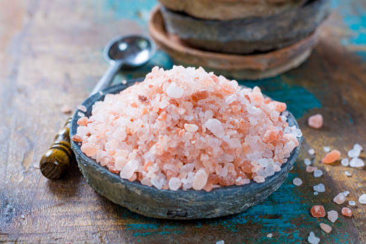
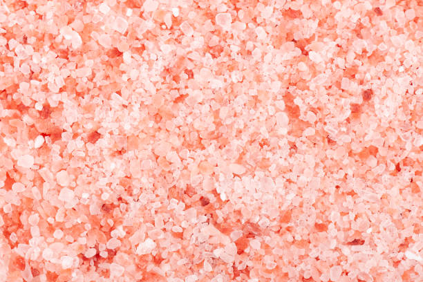

Himalayan salt is a pink-hued variety of salt that is sourced in the Punjab region of Pakistan, near the Himalayan foothills. These days, the pink salt is everywhere. Not only can you find it in grocery and specialty food stores, but its charming color has also made it a literal fixture in home goods like table lamps.
The origins of the mineral date back hundreds of millions of years, when the salt was deposited in a prehistoric lagoon. Until recently, the Himalayan salt market was fairly small. Now, exports of the popular salt have grown to 400,000 tons of salt each year.



What are the Health Benefits of Himalayan Pink Salt?
1. Full of Nutrients and Minerals
The pink hue of this salt is due to its high mineral content, which includes calcium, magnesium, potassium, copper, and iron. These minerals are essential for our bodies to function properly and can help to improve overall health. The minerals in Himalayan pink salt are thought to help regulate blood pressure, improve digestion, and reduce inflammation.
2. Contains Detoxifying Properties to Help Clean and Soften Your Skin
One of the most notable health benefits of Himalayan pink salt is its ability to help detoxify the body and soften the skin. This special type of salt has a unique combination of minerals, including magnesium, calcium, and potassium, that help to stimulate circulation and detoxify the body. As a result, it can help to flush out toxins, reduce puffiness and bloating, and help keep your skin looking soft and healthy.
3. Aids Weight Loss by Expelling Excess Water from the Cells
The mineral content of this salt helps to expel excess water from the cells, which can help to reduce bloating and water retention. This can help to reduce overall body weight and can even help to reduce the appearance of cellulite.
4. Helps in the Management of Muscle Cramps
Muscle cramps are a common issue that can be caused by a variety of reasons, such as dehydration, electrolyte imbalance, and muscle fatigue. Himalayan pink salt helps to alleviate muscle cramps by providing a natural source of electrolytes that can help restore balance in the body. It also contains magnesium, which helps to relax muscles and reduce the frequency of cramping.
5. Enhance Blood Circulation
Improved blood circulation is essential for a healthy body. It helps to keep your organs functioning properly and can even reduce the risk of heart disease. Himalayan pink salt contains trace amounts of iron, which helps to increase the blood’s oxygen-carrying capacity. This can help to reduce the risk of cardiovascular disease and other illnesses associated with poor blood circulation.